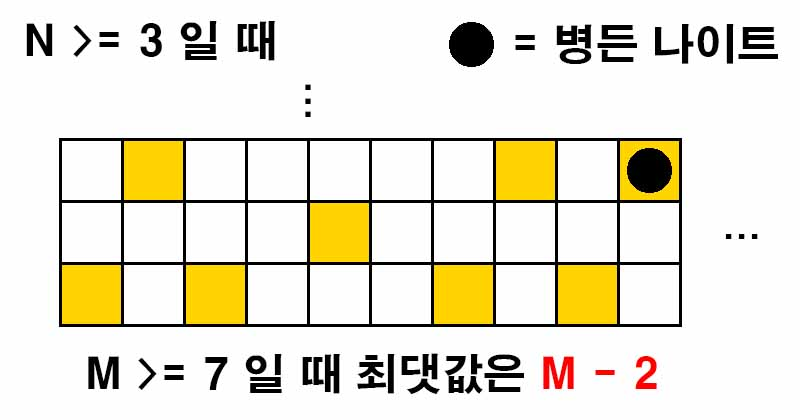

백준 1783. 병든 나이트
- https://www.acmicpc.net/problem/1783
-
문제 :
병든 나이트가 N × M 크기 체스판의 가장 왼쪽아래 칸에 위치해 있다. 병든 나이트는 건강한 보통 체스의 나이트와 다르게 4가지로만 움직일 수 있다.
1. 2칸 위로, 1칸 오른쪽
2. 1칸 위로, 2칸 오른쪽
3. 1칸 아래로, 2칸 오른쪽
4. 2칸 아래로, 1칸 오른쪽
병든 나이트는 여행을 시작하려고 하고, 여행을 하면서 방문한 칸의 수를 최대로 하려고 한다. 병든 나이트의 이동 횟수가 4번보다 적지 않다면, 이동 방법을 모두 한 번씩 사용해야 한다. 이동 횟수가 4번보다 적은 경우(방문한 칸이 5개 미만)에는 이동 방법에 대한 제약이 없다.
체스판의 크기가 주어졌을 때, 병든 나이트가 여행에서 방문할 수 있는 칸의 최대 개수를 구해보자. -
입력 :
첫째 줄에 체스판의 세로 길이 N와 가로 길이 M이 주어진다. N과 M은 2,000,000,000보다 작거나 같은 자연수이다. -
출력 :
병든 나이트가 여행에서 방문할 수 있는 칸의 개수중 최댓값을 출력한다. -
풀이 :
병든 나이트는 오른쪽으로 밖에 움직일 수가 없다. 일일이 옮겨면서 답을 구하기에는 N과 M의 범위가 너무 넓다.
N과 M의 크기에 따라서 병든 나이트가 움직일 수 있는 경우의 수를 계산하기로 했다.
세로(N)의 길이가 1일 경우 병든 나이트가 움직일 수 있는 경우의 수가 없으므로 방문할 수 있는 칸은 병든 나이트가 처음 위치에 있는 칸 밖에 없으니 답은 1일 것이다.
세로(N)의 길이가 2일 경우 움직일 수는 있지만 모든 이동 방법을 사용할 수는 없어 문제의 조건에 따른 최대값은 4일 것이다. (방문칸이 5미만만 이동제약이 없음 따라서 모든 이동 방법을 사용할 수 없을 경우 최대값은 4가 된다.)
세로(N)의 길이가 3이상 부터는 가로(M)의 길이에 따라 결정된다. 모든 이동 방법을 사용하기 위해 필요한 가로(M)의 길이는 7이상이여야 한다. 7미만일 경우의 최댓값은 4이다.

세로(N)의 길이가 3이상 가로(M)의 길이가 7이상일 경우 모든 이동 방법을 사용한 뒤 1, 3 이동 방법을 반복하면 최댓값을 구할 수 있다. 이럴 경우의 최댓값은 M - 2가 될 것이다.
